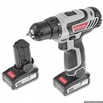

Шуруповерт Интерскол ДА-14.4ЭР
Описание товара
Шуруповерт — инструмент, без которого не обходится осуществление ремонта и строительных работ
Характеристики товара
- Тип двигателя — щеточный
- Подсветка — есть
- Гнездо в корпусе для крепления бит — нет
- Кейс в комплекте — есть
Технические характеристики
| № п/п | Тип | Характеристика | Значание мин | Значение макс |
|---|---|---|---|---|
| 1 | батарея | напряжение | 18 в | |
| тип | li-ion | |||
| 2 | максимальная выходная мощность | 370 вт | 375 вт | |
Подробное описание товара
Компактная двухскоростная дрель-шуруповерт, оснащенная подсветкой рабочей зоны, с литий-ионовым аккумулятором для работы с крепежом, закручивания/откручивания саморезов и сверлильных работ.
Комплектация
- батарея аккумуляторная: 2 шт.
- Двусторонняя бита
- Документация
- Аккумулятор